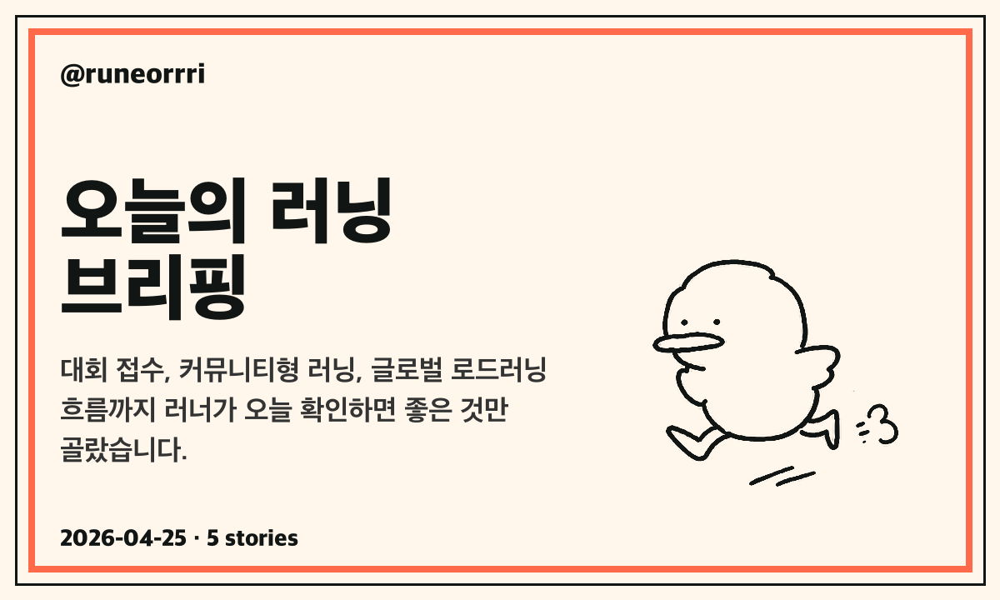

러너리
뉴스레터 아카이브
메일로 보낸 오늘의 러닝 브리핑을 모아둔 곳입니다. 대회 접수, 커뮤니티형 러닝, 글로벌 로드러닝 흐름까지 다시 확인하기 좋게 정리합니다.

오늘의 러닝 브리핑 02
- 서울하프마라톤 개최…26일 광화문~상암 도심 일부 통제
- 하트시그널 러닝 페스타, 2차 추가 접수 4/27 23:59까지
- ‘무한도전 Run with 쿠팡플레이’ 6/7 개최…접수는 5/7 하루
메일로 보낸 오늘의 러닝 브리핑을 모아둔 곳입니다. 대회 접수, 커뮤니티형 러닝, 글로벌 로드러닝 흐름까지 다시 확인하기 좋게 정리합니다.
